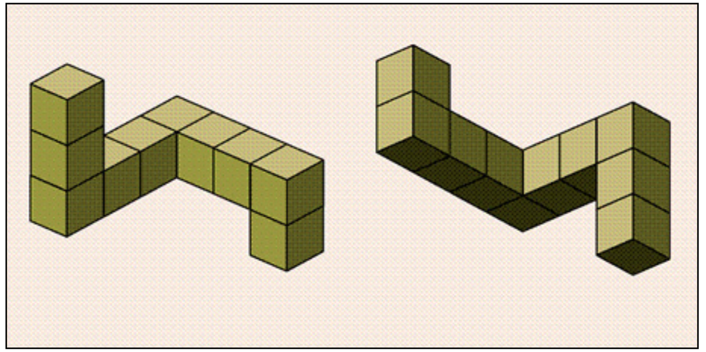
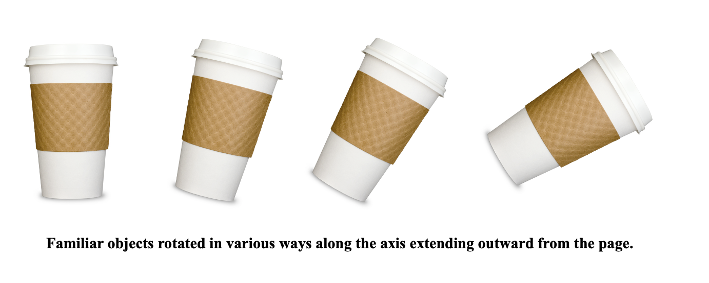
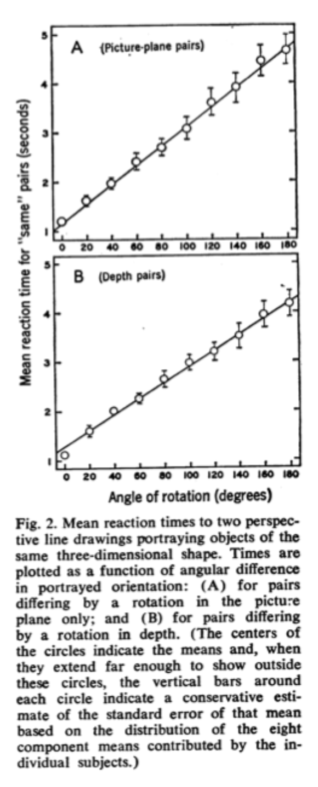

15. Mental Imagery, Mental Simulation, and Mental Rotation#
Note
This chapter authored by Todd M. Gureckis and is released under the license for the book.

Imagine a dog walking down your favorite New York street. Now imagine the dog has only three legs instead of four. Now imagine putting back the fourth leg, but making the dog wear a sweater. These mental “simulations” are infinitely creative, but also can feel as vivid as our actual visual experience. When you mentally construct a picture or image in your mind it is known as mental imagery. Mental imagery is a classic research topic in cognitive psychology because - unlike perception or sensation research - it involves mental representations and processing of information which are not immediately perceptible (e.g., with your eyes). Psychologist know a lot about how the visual system helps us perceive our surroundings, but much less about how these perceptual representations support later abstract thinking.
The idea of mental images seem so familiar and common-place, yet it seems very difficult to get a handle on what form these representations actually take. Indeed, one of the most contentious debates in cognitive psychology in the late 1960s was about the nature of mental imagery. Are mental images real? Are they even images? At first glance these questions may seem silly because the vividness of our imagination seems so obvious to us. However, the central question in early work on mental imagery was if the mind actually represents information in the form of images (just like a JPEG or PDF figure you put in your paper) or if all abstract thought is mediated by propositional, symbolic, language- like processes.
The two sides of this debate were the analog camp (represented by Kosslyn) and the propositional camp (represented by Pylyshyn). The analog camp argued that mental images are image-like representations that shared much in common with the lower level perceptual properties of our experience. Indeed, proponents of these theory likened mental images to the “surface displays generated on a cathode ray tube by a computer” (Kosslyn and Pomerantz, 1977). In contrast, the propositional camp argued that mental images were represented in a more abstract, language-like representation.
So, what does mental rotation have to do with any of this?
15.1. Theories of Mental Rotation#
The original mental rotation experiments were done by Roger Shepard and Jean Metzler in 1971. In these experiments, participants viewed pairs of objects like the ones at the top of the page and were asked to judge if they were the same the object (just from a different view) or were different (in the sense of being a mirror image of the each other). The key manipulation was that the objects were rotated in various ways. For example, imagine you are holding a warm cup of coffee in your hand. Now rotate the cup 15 degrees to clockwise. Good. Now go a bit further, 30 degrees. Watch out! The liquid might fall out!

In the Shepard & Metzler (1971) experiments, the time it took people to decide if an object was the same (just rotated) or different (a mirror reflection) depended on the angle of rotation:

In other words, it would take you longer to decide if the 30 degree rotated version of your cup was the same as the upright version relative to the 15 degree rotated version. The idea is that in order to make the same/mirror judgement, people actually mentally rotate the object. Bigger angles require more time to “rotate” in your mind just as they would in the real world (see Figure below). Cooper (1976) performed an even more interesting followup which provided even stronger evidence that people rotate objects when doing the matching task. Thus, most people agree that people do seem to perform some kind of mental rotation.
15.2. Why is this surprising?#
Take a moment to think about this result: the speed of making a same/mirror judgment depends on the angle at which the object pair is rotated. It is a trivial result, but also kind of profound. Think about all the possible ways the experiment might have worked out. Perhaps the representations we have to thinking about objects is more sophisticated. Instead of mentally rotating objects until they match we might be able to do a quick match based on some other property. Why rotate? Why not do some other type of transformation? Rotation implies stepping through a large number of intermediate states (1 degree, 2 degree, 3 degree, etc…), not all of which are critical to the actual same/mirror judgment.
The mental rotation experiments of the early 70s suggested that the abstract, mental processing of objects in our mind followed similar principals to those in the real world. This result was exciting to the analog theorists (like Kosslyn) who felt the mental images were like perceptual representations. On the other hand, it is not obvious how the propositional theory might explain this finding. There is nothing inherent to the propositional theory that would predict that objects would be matched based on rotations. Indeed, when you think about the propositional theory, it gives you some ideas about alternative algorithms or procedures for doing that task that are independent of angle (for example matching features and relations between different parts of the object). Of course, the propositional theory could be modified to account for this result (assuming that matching is done with a sequence of small, incremental “transformations” of some abstract representation). However, this seems like an ad-hoc add-on to the theory rather than a natural implication of the view the representations are propositional.
In the end, the field decided that, despite these intriguing results, the mental imagery debate was unlikely to resolved on the basis of behavioral data alone (Anderson, 1978). In effect, both the analog and propositional theory made a cardinal sin in theorizing about cognitive function: they each considered only the nature of the representation and not the process which operates over those representations. The specification of both the representation and the processes that operates over those representations is critical for any cognitive theory. As time as gone on, the debate about mental imagery are a little less contentious, although the question of the substrate of mental representation is still very active. The analog/imagery perspective is now most often associated with the embodied cognition movement (which argues that much of thinking is tied to the spatial properties of the world and our interactions with the environment). In addition, there have been a number of attempts to “blend” both the analog and proposition ideas (similar to the dual-code theory of Anderson, 1978). One example of this is the “perceptual symbols systems” approach from Barsalou (1999) which argues for a propositional representation that operates over images.
Mental rotation remains one of the core phenomena that cognitive psychologists study. In our lab we are going to replicate the mental rotation experiment as an excuse to learn a bit about linear regression.
15.3. Mental simulation#
A concept deeply realted to the concept of mental imagery is the idea of mental simulation. If mental imagery focuses on the content and representation of static sitautions, mental simulation focuses on how we run “movies” in our mind about how the world might unfold over the future. For example, if you are playing billard balls with someone you might kind of imagine in your mind how hitting a particular ball will bounce off the side of the table and interact with other balls. While mental simulation is an ability that generally applies to many aspects of our lives (we can simulate the behavior of people we know well… e.g., you might often thing “my dad would totally say this in this situation!”). However, one of the more interesting trends in cognitive science in the last 10 years has been to explore the nature of mental simulation as it applies to “intutive physics.” Intuitive physics refers to the type of simulation that you perform in the billard balls example… a case where your mental simuation or mental movie follows the rules of the physics of the world. Here the interest is do we really have a copy of phsyics in our minds?
15.4. Assigned Readings#
For this chapter I’m going to refer you to a number of excellent sources on mental imagery and mental simulation.
First please read section 1 (“Meanings and Connotations of ‘Mental Imagery”) and section 4 (“Imagery in Cognitive Science”) from this entry:https://plato.stanford.edu/entries/mental-imagery/index.html
Section 1: https://plato.stanford.edu/entries/mental-imagery/index.html#MeaConMenIma
Section 4: https://plato.stanford.edu/entries/mental-imagery/index.html#ImaCogSci
Next, read: Ullman, T. D., Spelke, E.S., Battaglia, P. and Tenenbaum, J.B. (2017), Mind Games: Game Engines as an Architecture for Intuitive Physics. Trends in Cognitive Science, 21 (9), 649-665. http://www.mit.edu/~tomeru/papers/ticsMindGames.pdf
15.5. Optional readings:#
Ganis, G. and Kievit, R.A., 2015. A New Set of Three-Dimensional Shapes for Investigating Mental Rotation Processes: Validation Data and Stimulus Set. Journal of Open Psychology Data, 3(1), p.e3. DOI: http://doi.org/10.5334/jopd.ai
Original mental rotation study: https://pdfs.semanticscholar.org/5add/6f4067e415a6dc76c025da3d49a6524a87c0.pdf
A paper by yours truly on the limits of mental simulation: http://gureckislab.org/papers/Ludwin-Peery-Bramley-Davis-Gureckis-2019-cogsci.pdf